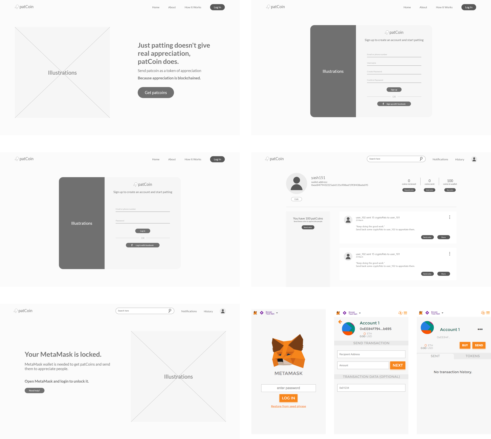
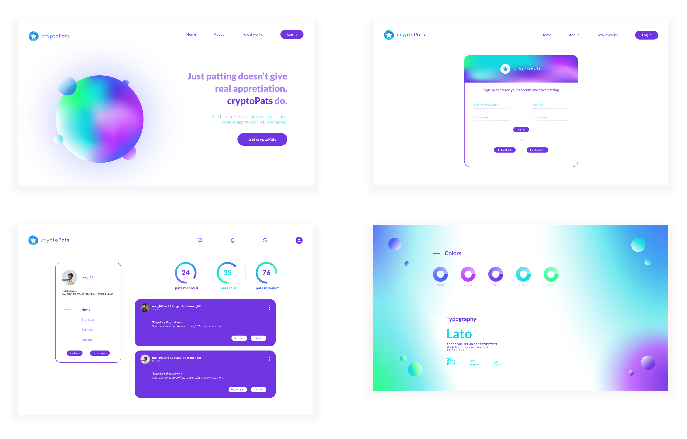

cryptoPats is a web application which provides a platform to corporate organisations to give marked appreciations to their employees and employers, and keep them motivated in the workspace. It does so by allowing employees and employers to send appreciation tokens to each other.
Employees should get 'real appreciations' which can be documented, apart from bonuses, incentives and just a pat on back.
Digiledge: Bengaluru, India
UX and UI designer (Design an MVP for the application)
Adobe XD, Adobe Illustrator, Pen and Paper, Wireframes, Prototypes
We conducted a brainstorming session with the team to generate ideas which could solve the problem of lack of 'real appreciations' in a corporate environment. We asked ourselves how could we solve this problem using Blockchain: the technology which the start-up specializes in.
We came up with the idea of sharing utility tokens (crytoPats) through ethereum blockchain, as a token of appreciation, within employees and employers in an organization.
1. Buy tokens and store in wallet
2. Send tokens to colleagues
3. Mini dashboard to see pats sent, pats received and pats in wallet
4. Send request for tokens
5. Feed in home screen showing transactions of colleagues
Next, I made low fidelity wireframes on Adobe XD, which included the above features.

Transactions in ethereum blockchain can be done in a test network through Metamask, a web browser extension. Hence, the users have to sign in to Metamask and perform a transaction (buy or send tokens) from the extension itself. No separate screens were designed for buying or sending tokens.
After taking feedback from the team, I designed a prototype in Adobe XD, designed a logo and set brand guidelines.

I shared the prototype link and design specifications to the developers generated through Adobe XD for further development of the application.
Through this project, I learned about the principles of wireframing, prototyping and UI patterns. The things which lacked in this project were user research and usability testing, but since this was an MVP, those gaps can be filled in later iterations upon design and development.
If there are any opportunities available in a full time UX designer role, do message me. :)